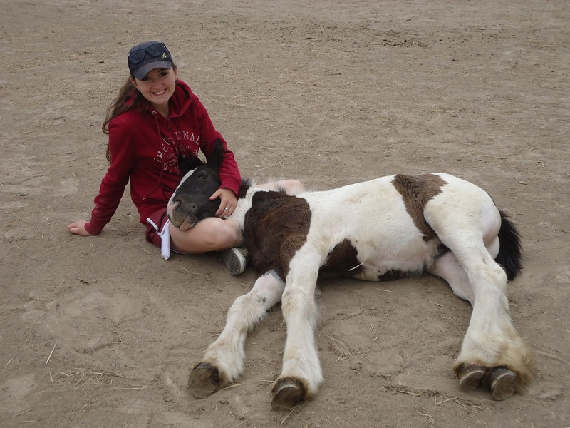

Koně
preventivní péče
- klinické vyšetření
- odběr vzorků
- vakcinace
- antiparazitika, koprologie
akutní výjezdy
- koliky
- obstipace jícnu
- rány
- porody a hříbat
- laminitida
interní medicína
- onemocnění trávicího traktu
- onemocnění dýchací soustavy
- horečky neznámého původu
- dermatologická problémy
- oftalmologické vyšetření
chirurgie
- kastrace hřebců
- enukleace
- vulvoplastika
- sutury ran
- pupeční kýly u hříbat
- odstranění novotvarů
reprodukce
- reprodukční vyšetření
- inseminace
- diagnostika březosti
- porody
- výplach dělohy
